El nacimiento de un icono
Hay acontecimientos que acaban formando parte de la identidad de una ciudad. No solo porque regresan cada año, sino porque con el tiempo se fijan en el imaginario colectivo como algo propio. El Barcelona Open Banc Sabadell – Trofeo Conde de Godó es uno de ellos. Desde 1953, su historia discurre en paralelo a la de Barcelona como una cita que ha sabido reunir prestigio deportivo, vida social y proyección internacional hasta convertirse en mucho más que un torneo de tenis.
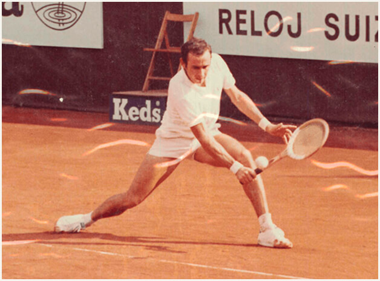
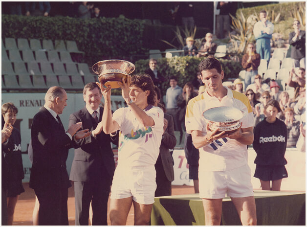
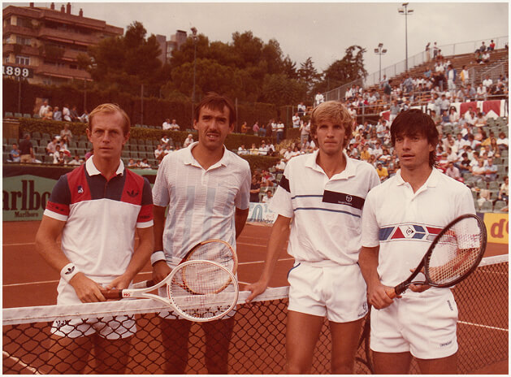
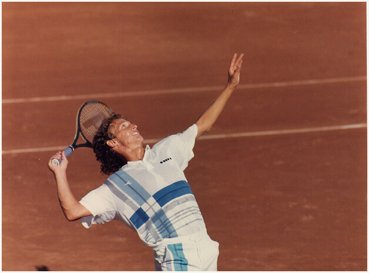
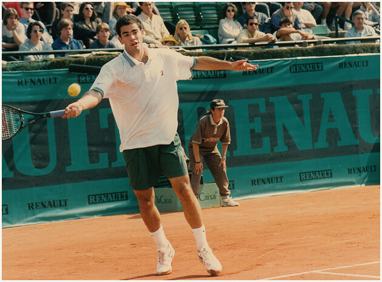
Contexto y símbolos del torneo
Su origen está ligado a un momento decisivo para el Real Club de Tenis Barcelona-1899: la apertura de la nueva sede en Pedralbes, un hito que impulsó la creación de una gran competición capaz de reflejar la vocación internacional de la entidad y de acompañar el comienzo de una nueva etapa. Así nació el Trofeo Conde de Godó, heredero de la tradición tenística que el club venía cultivando desde principios del siglo XX y concebido, desde el primer momento, como una cita capaz de situar a Barcelona en el mapa del gran tenis europeo. La respuesta del público en aquella primera edición confirmó que el torneo nacía con algo más que ambición deportiva: llenó las gradas y empezó a construir un vínculo emocional con la ciudad.
Desde 1953, el Trofeo Conde de Godó forma parte de la historia de Barcelona
También el propio trofeo contribuía a esa voluntad de permanencia. Diseñado en 1953 por los joyeros Soler Cabot, con su silueta de plata, su base de roble americano y la figura de un tenista coronando la pieza, se convirtió desde el inicio en un símbolo reconocible del torneo. Con los años, esa imagen ha acompañado a campeones, generaciones y épocas distintas, reforzando la idea de que el Godó no solo premia una victoria: custodia una herencia. Y es precisamente ahí, en esa suma de deporte, memoria y ciudad, donde empieza a forjarse su condición de icono.
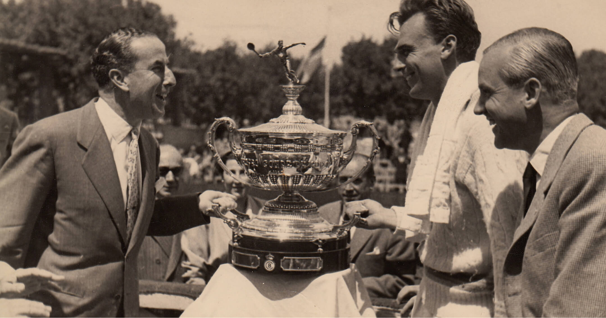
El torneo hoy: la continuidad del legado
Más de siete décadas después de aquella primera edición, el Barcelona Open Banc Sabadell – Trofeo Conde de Godó mantiene intacta su capacidad de convocar a la ciudad en torno a una cita que trasciende lo estrictamente deportivo. Convertido hoy en una referencia consolidada del calendario internacional de tenis sobre tierra batida, el torneo ha sabido preservar aquello que lo hizo singular desde el principio: su condición de gran evento de club, su estrecho vínculo con Barcelona y una personalidad propia que lo distingue dentro del circuito.
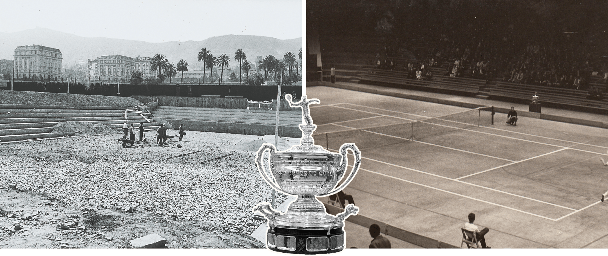
Esa continuidad no se explica solo por su prestigio competitivo o por los grandes nombres que han dejado huella en sus pistas, sino también por su manera de seguir formando parte del pulso de la ciudad. Cada primavera, el Godó vuelve a activar un ritual reconocible: el encuentro entre tradición y presente, entre memoria y actualidad, entre la historia de un torneo legendario y la vigencia de una cita que sigue escribiéndose año tras año. En esa evolución, Banc Sabadell se ha integrado en una etapa clave de la historia reciente del torneo. Su presencia como patrocinador principal ha coincidido con años de consolidación internacional y ha reforzado la continuidad de una cita que ha sabido crecer sin perder aquello que la distingue: su vínculo con Barcelona, su prestigio deportivo y su condición de gran torneo de club.
Momentos clave
Jugadores que han marcado el torneo
La historia del Barcelona Open Banc Sabadell – Trofeo Conde de Godó también se escribe a través de sus grandes campeones. Sus victorias no solo marcaron el palmarés del torneo, sino además algunas de sus etapas más reconocibles.
-
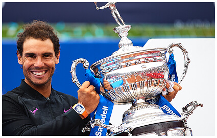
Rafael Nadal
12 títulos
2005, 2006, 2007, 2008, 2009, 2011, 2012, 2013, 2016, 2017, 2018 y 2021
El gran dominador de la historia del torneo. Sus doce títulos hicieron del Godó uno de los escenarios más reconocibles de su carrera y reforzaron la proyección internacional del torneo en el siglo XXI.
-
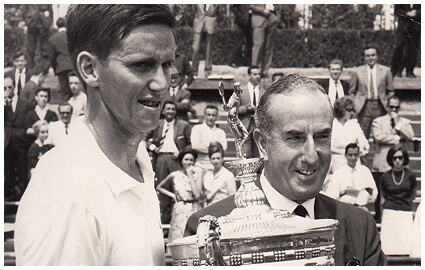
Roy Emerson
3 títulos
1961, 1963 y 1964
Uno de los grandes nombres de la primera etapa internacional del torneo y el primer tricampeón de su historia.
-
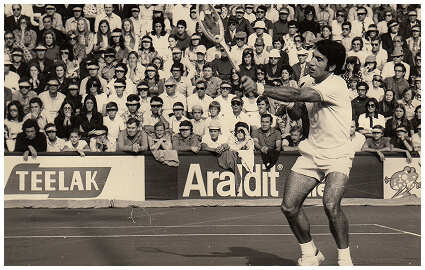
Manuel Orantes
3 títulos
1969, 1971 y 1976
Figura decisiva en la consolidación del tenis español y protagonista de algunas de las imágenes más recordadas del torneo.
-
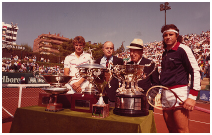
Mats Wilander
3 títulos
1982, 1983 y 1984
Su dominio en los años ochenta reforzó la proyección internacional del torneo sobre tierra batida.
-
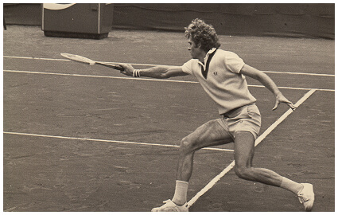
Ilie Nastase
2 títulos
1973 y 1974
El rumano llevó al Godó la presencia de una gran figura mundial en plena apertura del torneo al gran circuito profesional.
-
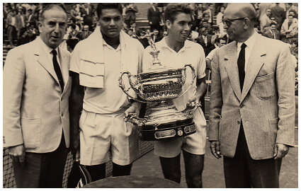
Manuel Santana
2 títulos
1962 y 1970
Su nombre está ligado a la etapa en la que el torneo ganó prestigio y se proyectó como una gran cita del tenis.
-
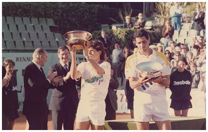
Andrés Gómez
2 títulos
1989 y 1990
El ecuatoriano firmó dos triunfos consecutivos en una etapa de fuerte competitividad internacional sobre tierra batida.
-
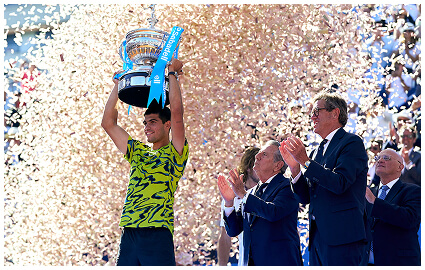
Carlos Alcaraz
2 títulos
2022 y 2023
La gran figura del presente ya forma parte del palmarés de referencia del torneo y encarna el relevo generacional del Barcelona Open Banc Sabadell – Trofeo Conde de Godó.
Barcelona y el torneo: un vínculo que es mucho más que deporte
Cada ciudad tiene sus propios rituales: momentos del año que regresan y, al hacerlo, reafirman una forma de estar en el tiempo y en la memoria. En Barcelona, el Open Banc Sabadell – Trofeo Conde de Godó ocupa desde hace décadas ese lugar. No solo como gran cita deportiva, sino como una de las imágenes más reconocibles de la primavera barcelonesa, un acontecimiento que ha sabido enlazar el prestigio del tenis internacional con una sensibilidad muy propia de la ciudad.
Su historia no se mide únicamente en títulos, campeones o finales memorables. También se percibe en todo lo que lo rodea: el ambiente de Pedralbes, la tierra batida, las gradas, las imágenes de archivo y la continuidad de un evento que ha acompañado a distintas generaciones. El torneo ha sido, en ese sentido, también un punto de encuentro entre deporte, ciudad y memoria compartida.
La singularidad del torneo reside en haber sabido convertirse, con el paso del tiempo, en un símbolo compartido de la ciudad
Un legado que sigue en juego
La historia del torneo no pertenece solo al pasado. Sigue latiendo cada primavera, en la pista, en las imágenes que regresan, en los jugadores que han dejado su huella y en la ciudad que lo reconoce como parte de sí misma. Ahí reside quizá su singularidad: en haber sabido convertirse, con el paso del tiempo, en un símbolo compartido.
Desde 1953, el Barcelona Open Banc Sabadell - Trofeo Conde de Godó ha unido deporte y prestigio hasta convertirse en uno de esos símbolos que perduran porque siguen teniendo sentido. Su historia continúa viva en cada nueva edición, enlazando legado y presente sin dejar de mirar hacia el futuro.
Descubre las últimas novedades del torneo